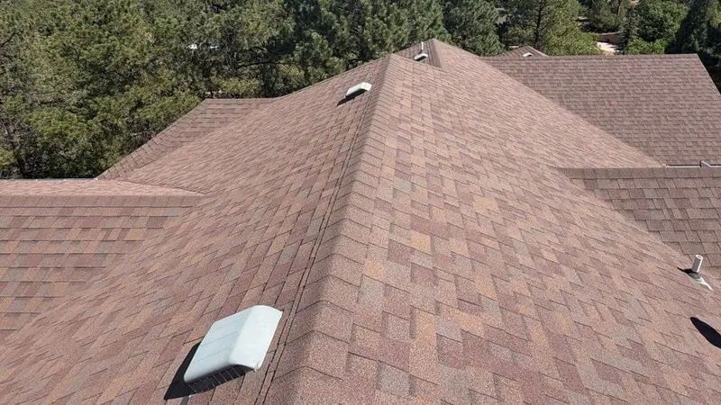

Site map
Every page on this site, grouped by what it covers.

Roofing
- Roofing in Knoxville and East Tennessee
- Roof replacement in Knoxville
- Roof repair in Knoxville
- Emergency roof repair and storm damage in Knoxville
- Help with your roof insurance claim
- Chimney leak repair in Knoxville
- Skylight repair in Knoxville
- Metal roofing in Knoxville: standing seam and panels
- Commercial roofing in Knoxville
- Church roofing in Knoxville and East Tennessee
Other services
- Siding, windows, gutters and decks in Knoxville
- Siding for Knoxville homes
- Windows and doors for Knoxville homes
- Gutters sized for Knoxville rain
- Decks, porches and covered patios
Service areas
- Where we work across East Tennessee
- Roofers for every Knoxville neighborhood
- Roof replacement and repair in Farragut
- Roof repair and replacement in Maryville
- Roof repair and replacement in Oak Ridge
- Roof repair and replacement in Lenoir City
- Roof replacement and repair in Sevierville
- Roofing in Powell and the Emory Road corridor
- Roofing in Hardin Valley, where the 2010s subdivisions are
- Roofing in Karns, along Oak Ridge Highway
- Roofing in Seymour, between Knoxville and the Smokies
- Loudon roofing company
- Jefferson City roofing company
- Morristown roofing company
- Roofing contractors for Knox County
- Roofing contractors for Blount County
- Roofing contractors for Loudon County
- Roofing contractors for Anderson County
- Roofing contractors for Roane County
- Roofing contractors for Sevier County
- Roofing contractors for Jefferson County
- Roofing contractors for Hamblen County
Guides and tools
- Free roof inspection
- Roof financing in Knoxville: how people pay
- Roofing questions, answered in plain English
- Roof cost calculator for Knoxville homes
- Roof warranties, in plain words
- Storm damage to your roof: hail, wind and trees
Company
- The Knoxville roofing company you can count on
- What we stand for
- Products we install
- Projects
- About Crestone Roofing
- Roof and gutter replacement after hail damage
- Leak repair and roof replacement on a ranch with skylights
- Metal roof replacement: shingles to standing seam
- Contact Crestone Roofing
- What Crestone Roofing customers say
- Work with Crestone Roofing in Knoxville
Blog
- Roofing articles for East Tennessee homes
- What a roof replacement costs in Knoxville
- Drones in roofing: where they help and where a ladder still wins
- Choosing replacement windows: types and frames
- Metal roof over shingles? Why tear-off is usually better
- Matching roof, siding and trim colors
- K-style or half-round gutters
- A once-a-year roof check you can do from the driveway
- Six signs your siding is done
- What replacement windows save on a power bill
- Seven signs a roof is near the end
- How long each kind of roof lasts in East Tennessee
- Picking a shingle color for your house style
- How to clear a clogged downspout
- After a hailstorm: handling the knock at your door
- Vinyl siding in a humid climate: pros and cons
- Shingle upgrades worth asking about
- What's under your shingles
- What a roof inspection should cover before you buy a house
- Repair or replace siding? How to tell
- Thinking about solar? Check the roof first
- Metal roof or shingles for an East Tennessee house
- Where roofs leak: valleys, boots, chimneys and skylights
- A tree on the roof: the first hour
- Getting a house ready for a Tennessee winter
- Gutter guards under oaks and pines: what works
- Siding styles, from lap to board and batten
- Architectural or 3-tab shingles for an East Tennessee house
- Light or dark shingles in a Tennessee summer
- What summer heat does to a roof and the attic under it
- Buying a house with an older roof: what to ask for
- Hail in East Tennessee: what it does to shingles and what to photograph
- Spring storms, straight-line wind and your roof
- How long gutters last, and the signs yours are done
- The words on a roofing estimate, explained
- Roof leaking right now? Five things to do first
- When to clean gutters under East Tennessee trees